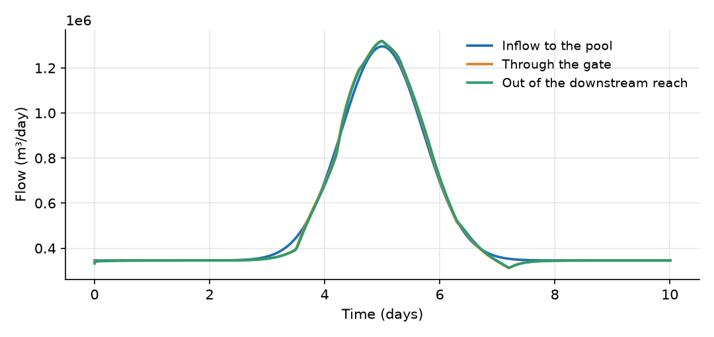
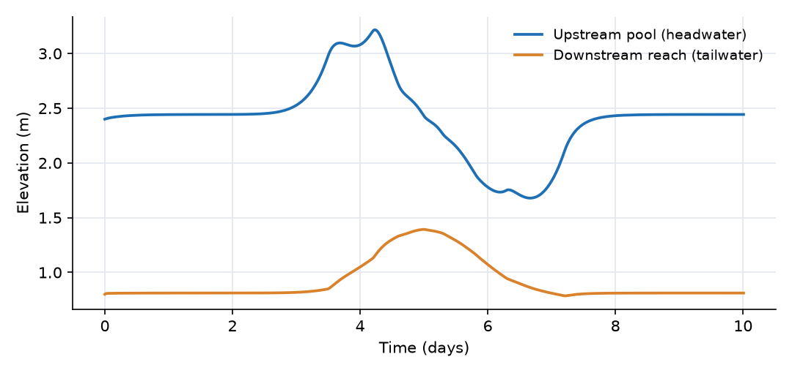
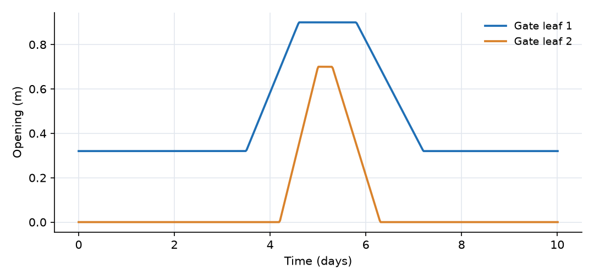

What this model represents
A check structure is a gate across a canal that holds the water level in the pool above it, so that turnouts and offtakes along the pool keep a steady head. When the flow in the canal changes, the gate operator has to change the gate opening to pass the new flow at the same pool level.
This model represents a canal with one such structure: an upstream pool, a two-leaf sluice gate and a downstream reach. A flood wave raises the inflow from 4 m³/s to 15 m³/s and back over about four days. The gates follow a fixed schedule of openings, prepared in advance (open-loop operation). The model shows how well that schedule holds the pool level, and what happens when gate movements are early or late compared with the flow. The same setup can be used to test a proposed operating schedule, or to reproduce recorded gate positions at an existing structure and check the computed flows against measurements.
How it works
Canal reaches. Each reach is one storage cell with a trapezoidal section. Its depth follows from the storage S, length L, base width b and side slope z:
d = (−b + √(b² + 4·z·S/L)) / (2·z), head h = z_bed + d
The pool gains the inflow from canal_inflow.csv and loses the gate flow. The downstream reach gains the gate flow and drains to the fixed outlet level through a Manning link:
Q_out = (1/n)·A·R^(2/3)·√((h_reach − h_outlet)/L)
with A and R the flow area and hydraulic radius of the downstream reach.
Gate. The gate link treats each leaf as a submerged orifice whose area is the leaf width times its imposed opening. With the openings a₁(t) and a₂(t) read from the two schedule files:
Q_i = C_d · (w·max(a_i, 0)) · √(2g·max(h_pool − h_tail, 0)), i = 1, 2 Q_leak = C_d · A_leak · √(2g·max(h_pool − h_tail, 0)) Q_gate = Q_1 + Q_2 + Q_leak
with C_d = 0.7, w = 3 m per leaf, A_leak = 0.05 m² and g = 9.81 m/s². The link computes this in m³/s and passes 86,400 times that value (m³/day) to the mass balance. Flow is only allowed from the pool to the downstream reach: when the tailwater is higher than the pool, the gate passes nothing (as a flap or a closed check would).
Positive direction. All links are positive in the downstream direction (pool → downstream reach → outlet).
Units. Flows in the model and in the output are in m³/day (1 m³/s = 86,400 m³/day). Output columns Check_Gate_flow_m3_sec and Check_Gate_flow_ft3_sec give the gate flow in m³/s and ft³/s.
What to look for in the results
- Steady base flow. With leaf 1 at 0.32 m, the gate area is 0.96 m² plus 0.05 m² of leakage. Passing 4 m³/s through 1.01 m² needs √(2g·Δh) = 4.0/(0.7 × 1.01) = 5.66 m/s, so Δh = 1.63 m. With the tailwater at 0.81 m, the pool settles at 2.44 m, which is what the model gives for days 0.5 to 2.5.
- Gates open late. The schedule starts to raise leaf 1 at day 3.5 and leaf 2 at day 4.2, but the flood is already rising from day 3. The pool stores the difference and peaks at 3.22 m at day 4.2, 0.8 m above its set level.
- Gates close late. Both leaves stay open after the peak. At day 6.7 the pool has been drawn down to 1.68 m, about 0.8 m below its set level. It recovers to 2.44 m once leaf 1 returns to 0.32 m.
- Gate flow versus inflow. The difference between the two flow curves is the rate of change of storage in the pool. Gate flow lags inflow while the pool rises and exceeds it while the pool drains.
- Tailwater. The downstream reach rises from 0.81 m to 1.39 m during the flood. Because the gate flow depends on the head difference, the higher tailwater reduces the gate capacity at a given opening.
- Submerged flow throughout. The downstream water level stays above the top of the gate opening (gate sill at 0 m, opening at most 0.9 m, tailwater at least 0.8 m), so the submerged orifice equation applies over the whole run.
Assumptions and limitations
- The gate equation is a submerged orifice with a constant discharge coefficient. Free (unsubmerged) gate flow, where the discharge depends on the upstream depth only, is not represented. Check that the tailwater stays above the gate opening when adapting this model.
- The gate opening is imposed. Nothing in the model adjusts it in response to the pool level, so the schedule must be prepared outside the model.
- Reverse flow through the gate is blocked.
- Each reach is a single storage cell, so travel time and wave attenuation within a reach are not resolved. A longer canal should be divided into several segments.
- There are no turnouts, seepage or evaporation losses.
- The inflow and the gate schedule are synthetic.
Model diagram
Hover a block or link to see its name and type. Arrows show the positive flow direction.
Components
Click a component to see every property set in the model file, with units and meaning.
Blocks 3
Storage compartments: each holds water (and dissolved or particulate mass) and has a state that evolves in time.
Upstream_PoolTrapezoidal Channel Segment · open_channelCanal pool upstream of the gate, 2000 m long, trapezoidal with a 6 m base width, side slopes of 1.5 horizontal to 1 vertical, Manning n = 0.025, bed at 0 m. Receives the canal inflow. Its water level is what the gate operator is trying to hold near 2.4 m.
Trapezoidal Channel Segment: Trapezoidal Channel Segment
| Property | Value | Unit | Meaning |
|---|---|---|---|
| Base Width | 6 | m | The width of the bottom (flat) portion of the trapezoidal channel cross-section. |
| Side Slope | 1.5 | The horizontal to vertical ratio of the sloped sides (e.g., 2 means 2 horizontal to 1 vertical). | |
| Manning's Roughness Coefficient | 0.025 | Roughness coefficient used in Manning's equation to estimate flow resistance. | |
| Bottom Elevation | 0 | m | Elevation of the channel bottom relative to the model’s vertical datum. |
| Segment length | 2000 | m | |
| Initial Water Depth | 2.4 | m | Depth of water in the channel segment. If depth is initially unknown, it is estimated based on storage. |
| Inflow time series | canal_inflow.csv | m^3/day | |
| Inflow multiplier | 1 | Scales the inflow time series (for example an uncertain lateral inflow estimate). 1 uses the series as given. | |
| Obstacle height | 0 | m | The water depth below which the flow ceases |
| Area of agriculural land | 0 | m2 | |
| Area of non-agriculural activity | 0 | m2 |
Downstream_ReachTrapezoidal Channel Segment · open_channelCanal reach below the gate, same cross-section, 2000 m long, bed at −0.5 m. Its water level is the gate tailwater.
Trapezoidal Channel Segment: Trapezoidal Channel Segment
| Property | Value | Unit | Meaning |
|---|---|---|---|
| Base Width | 6 | m | The width of the bottom (flat) portion of the trapezoidal channel cross-section. |
| Side Slope | 1.5 | The horizontal to vertical ratio of the sloped sides (e.g., 2 means 2 horizontal to 1 vertical). | |
| Manning's Roughness Coefficient | 0.025 | Roughness coefficient used in Manning's equation to estimate flow resistance. | |
| Bottom Elevation | -0.5 | m | Elevation of the channel bottom relative to the model’s vertical datum. |
| Segment length | 2000 | m | |
| Initial Water Depth | 1.3 | m | Depth of water in the channel segment. If depth is initially unknown, it is estimated based on storage. |
| Inflow multiplier | 1 | Scales the inflow time series (for example an uncertain lateral inflow estimate). 1 uses the series as given. | |
| Obstacle height | 0 | m | The water depth below which the flow ceases |
| Area of agriculural land | 0 | m2 | |
| Area of non-agriculural activity | 0 | m2 |
Canal_Outletfixed_headFixed water level of 0.5 m at the end of the downstream reach (for example the next pool or a receiving water body).
fixed_head: Fixed-head boundary
| Property | Value | Unit | Meaning |
|---|---|---|---|
| Head | 0.5 | m | |
| Initial Storage | 100000 | m3 |
Links 2
Connections that move water (and the mass it carries) between blocks.
Check_Gateimposed_gate_control_weir · Gate_controlTwo vertical-lift gate leaves side by side, each 3 m wide, discharge coefficient 0.7, with openings read from gate1_opening.csv and gate2_opening.csv. A 0.05 m² leakage area passes water even when both leaves are shut.
gate1_opening.csv and gate2_opening.csv. A 0.05 m² leakage area passes water even when both leaves are shut.imposed_gate_control_weir: S26 Imposed Gate Control Weir - Submerged Orifice
| Property | Value | Unit | Meaning |
|---|---|---|---|
| Observed Gate Opening - Gate 1 | gate1_opening.csv | m | |
| Observed Gate Opening - Gate 2 | gate2_opening.csv | m | |
| Submerged Orifice Discharge Coefficient Cd | 0.7 | ||
| Width of Each Gate | 3 | m | |
| Equivalent leakage area when the gates are closed | 0.05 | m2 | Flow area that passes water regardless of the observed gate openings (seal leakage, partially seated gates). Flow = discharge_coefficient * leakage_area * sqrt(2 g dh). Zero reproduces the closed-gate behaviour. |
Downstream_Outflowchannel2fixed · open_channelManning flow from the downstream reach to the outlet level.
channel2fixed: Link from a channel segment to fixed head boundary
Input files
canal_inflow.csv | Flow entering the upstream pool. Base flow of 4 m³/s with a flood wave peaking at 15 m³/s at t = 5 days (Gaussian, 1 day time scale). Time in days, flow in m³/day. Synthetic. |
gate1_opening.csv | Opening of gate leaf 1 (m) versus time (days): 0.32 m until day 3.5, raised to 0.90 m by day 4.6, held until day 5.8, lowered back to 0.32 m by day 7.2. Linear between the listed points. |
gate2_opening.csv | Opening of gate leaf 2 (m) versus time (days): closed until day 4.2, raised to 0.70 m by day 5.0, held until day 5.3, closed again by day 6.3. |
Simulation settings
| Start time | 0 |
| End time | 10 |
| Initial time step | 0.001 |
| Write interval (steps) | 1 |
Results
Produced by running the downloaded model unchanged.


